Nueve capítulos y cuatro talleres, en diapositivas. Los talleres se trabajan en esta misma página, en equipos y desde un dispositivo por equipo.
→← cambian de diapositiva · Inicio y Fin van a la primera y a la última · Esc cierra este índice.
Derecho de autor · Sesión presencial
Desarmar.Atribuir.Autorizar.
Un videojuego no es una sola obra: es código, arte, música, guion y voces, y cada capa tiene su propio titular. Hoy lo desarmamos pieza por pieza.
Derecho colombiano y comparado
9Capítulos
4Talleres en equipo
23Fuentes primarias
La clase
Vamos a tratar el videojuego como lo que es: un conjunto de obras, de autores, de titulares, de contratos y de tecnologías que deben coordinarse antes de que el código llegue al público. Primero descomponemos, luego atribuimos, después autorizamos y, al final, evaluamos excepciones y riesgos.
Trabajaremos con el derecho colombiano (Ley 23 de 1982, Decisión Andina 351 de 1993 y Ley 1915 de 2018) y usaremos casos de Estados Unidos y de la Unión Europea como comparación, nunca como derecho propio. Las normas y las sentencias se citan desde sus fuentes oficiales.
Al terminar la clase
Explicarán por qué un videojuego reúne software, obras audiovisuales, arte, música, textos, interpretaciones y fonogramas, y distinguirán autoría de titularidad.
Construirán un mapa de titularidad (chain of title) y detectarán qué activos necesitan autorización.
Evaluarán mods, contenido de usuarios, streaming, ingeniería inversa y assets generados con IA sin trasladar automáticamente el fair use, el DMCA o el work made for hire al derecho colombiano.
Negociarán y redactarán cláusulas de licencia que respeten los derechos morales y enumeren las modalidades de explotación.
01
¿Quién es dueño de este videojuego?
Antes de cualquier definición, veamos un tráiler y respondamos una pregunta sencilla: en treinta segundos, ¿cuántas obras o derechos distintos aparecen en pantalla? No hay todavía una respuesta correcta. Lo importante es notar lo difícil que resulta contarlos.
Nota del docente · 0–12 min · Encuesta y discusión. Proyectar 20–30 segundos de un tráiler oficial con personaje, música, interfaz, voces y gameplay. Recoger respuestas sin corregir. Transición: «La dificultad de responder demuestra que primero necesitamos desarmar jurídicamente el juego».
01 · ¿Quién es dueño de este videojuego?
¿Cuántas obras o derechos vieron?
Entre 1 y 3
0
Entre 4 y 6
0
Entre 7 y 10
0
Más de 10
0
Total: 0 respuestas ·
01 · ¿Quién es dueño de este videojuego?
Las preguntas que sí tienen respuesta
«¿Quién es dueño del videojuego?» es una pregunta mal planteada. Las que vamos a aprender a responder, en este orden, son otras:
¿Qué elementos están protegidos?
¿Quién los creó?
¿Quién posee cada derecho?
¿Qué se transfirió o licenció?
¿Para qué usos?
¿Qué excepciones podrían operar?
¿Qué ocurre cuando el jugador modifica, transmite, extrae, remezcla o genera nuevos contenidos?
01 · ¿Quién es dueño de este videojuego?
Encuentre los derechos en este fotograma
El fotograma pertenece a un juego ficticio, Nebula Run, dibujado para esta clase. Toque cada marcador: encontrados 0 de 12.
Doce elementos, muchas obras
Cada marcador abre una ficha con el elemento, el tipo de obra o derecho, el titular probable y la pregunta que un abogado de producción haría antes del lanzamiento.
02
Un videojuego no es una sola obra
La primera decisión es enseñar un haz de derechos, no una etiqueta. La Dirección Nacional de Derecho de Autor parte de que un videojuego «se compone de varias obras» y, en la práctica registral, cada capa (software, música, arte, guion, audiovisual) se documenta en su propia categoría. El Tribunal de Justicia de la Unión Europea llegó a una idea parecida en Nintendo v. PC Box: los videojuegos son material complejo que combina un programa de ordenador con elementos gráficos y sonoros que tienen valor creativo propio.
Nota del docente · 12–32 min · Minilección dialogada. Presentar la guía de la DNDA y el enfoque de Nintendo v. PC Box; introducir la Decisión 351, arts. 3 a 15 y 23. Transición: «Ya sabemos qué podría estar protegido. Ahora falta descubrir quién tiene qué».
02 · Un videojuego no es una sola obra
Lo que dicen la DNDA y el Tribunal de Justicia de la UE
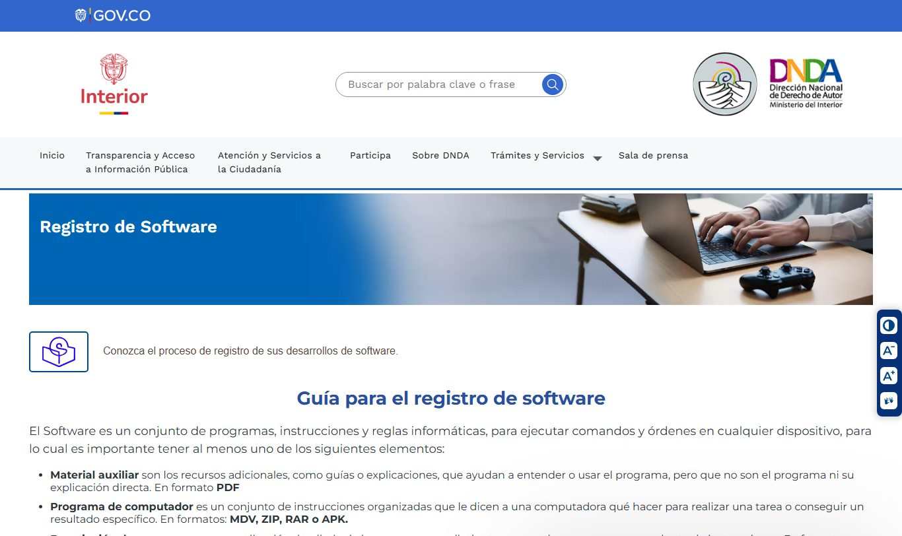
DNDA, «Registro de Software». La guía advierte que los videojuegos «se componen de varias obras protegidas por el derecho de autor ya que tienen: música, ilustraciones, guiones, etc.» y recomienda adjuntar el código fuente al registrarlos.
Captura del 28 de octubre de 2026 de derechodeautor.gov.co/es/registro-de-software (Ministerio del Interior, DNDA). Contenido institucional citado con fines docentes.
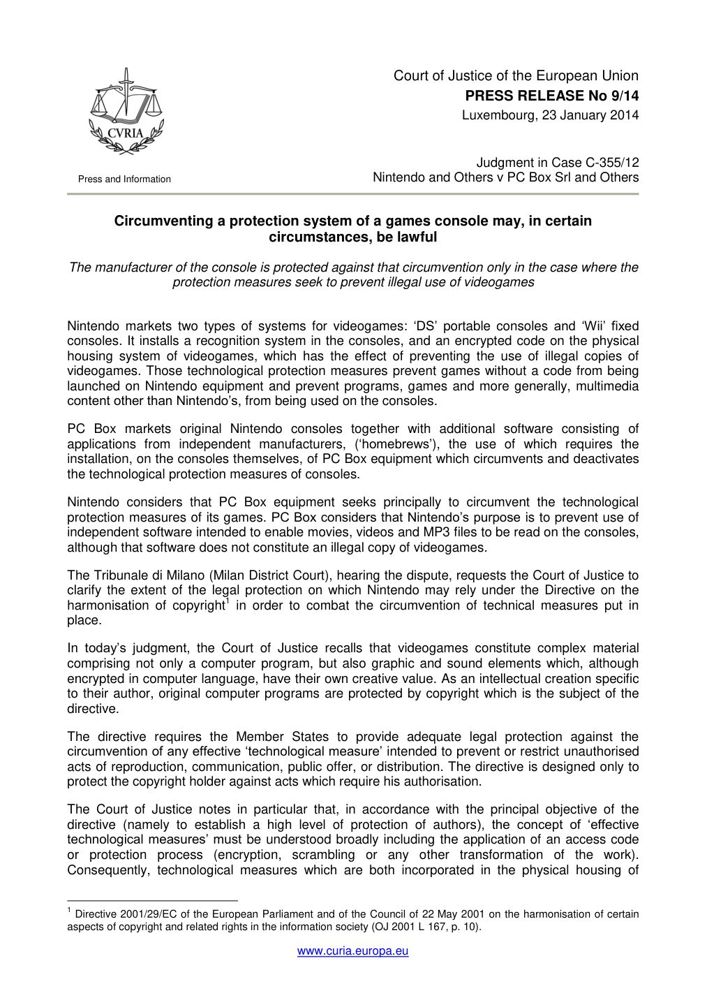
TJUE, Nintendo v. PC Box (C-355/12), 23 de enero de 2014. Comunicado de prensa n.º 9/14: los videojuegos son «material complejo» que comprende programas de ordenador y elementos gráficos y sonoros con valor creativo propio.
Fuente: curia.europa.eu (PDF oficial). Documento del TJUE reproducido con indicación de la fuente.
Conviene no exagerar la guía de la DNDA. Que el registro se haga por capas no significa que ningún juez pueda valorar el videojuego de manera integral; significa que, para documentar y analizar derechos, cada capa exige su propio examen.
02 · Un videojuego no es una sola obra
La cadena de titularidad
Creadores (personas físicas) → capas protegidas → estudio → videojuego → publisher → plataformas → jugadores. Cada flecha es un acto jurídico que debe constar por escrito. El diagrama se desplaza hacia la derecha.
Creadores
Programadores
Artistas y animadores
Compositores e intérpretes
Guionistas y diseñadores
→crean
Capas / obras
Código / motor / herramientas
Arte / personajes / UI / animación
Música / grabaciones / voces
Guion / diálogos / mundo narrativo
→cesión o licencia (contrato escrito)
Titular derivado
Estudio / productor
→integra
Obra compleja
Videojuego
→licencia de explotación
Explotación
Publisher
→distribución
Acceso
Plataformas / tiendas
→EULA
Uso
Jugadores
→nuevos actos
Después del lanzamiento
Mods / UGC
Streams / Let’s Play
02 · Un videojuego no es una sola obra
Doce capas, doce preguntas
Cada capa tiene un objeto protegido distinto, un riesgo típico y una pregunta que responder antes de congelar el activo. Abra cada fila.
02 · Un videojuego no es una sola obra
El mapa normativo
ConstituciónArt. 61 C.P.«El Estado protegerá la propiedad intelectual por el tiempo y mediante las formalidades que establezca la ley.»
InternacionalConvenio de BernaArts. 2, 6bis, 9, 10, 12 y 14bis: obra, derechos morales, reproducción, excepciones, adaptación y obras cinematográficas.
Comunitario andinoDecisión 351Autor como persona física; idea y expresión (art. 7); software como obra literaria (art. 23); derechos patrimoniales; excepciones y regla de tres pasos; alcance de las licencias (art. 31).
Ley nacionalLey 23 de 1982Art. 20 (obras por encargo y bajo contrato de trabajo), art. 30 (derechos morales), arts. 98 a 104 (obra cinematográfica), art. 41 (libre reproducción de normas y sentencias).
Ley nacionalLey 1915 de 2018Medidas tecnológicas (arts. 12 y 13), excepción de interoperabilidad, observancia y remedios (arts. 29 a 33).
02 · Un videojuego no es una sola obra
Tres artículos de la Decisión 351 que usaremos todo el tiempo
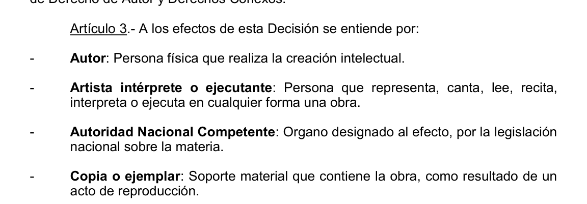
Art. 3. «Autor: Persona física que realiza la creación intelectual.» Decir «el estudio es el autor» es impreciso; el estudio es, en su caso, titular.
Texto oficial, comunidadandina.org (PDF).
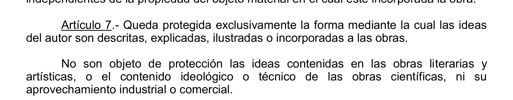
Art. 7. Queda protegida exclusivamente la forma mediante la cual las ideas son descritas, explicadas, ilustradas o incorporadas a las obras. Las ideas, y su contenido técnico, no.
Texto oficial, comunidadandina.org (PDF).
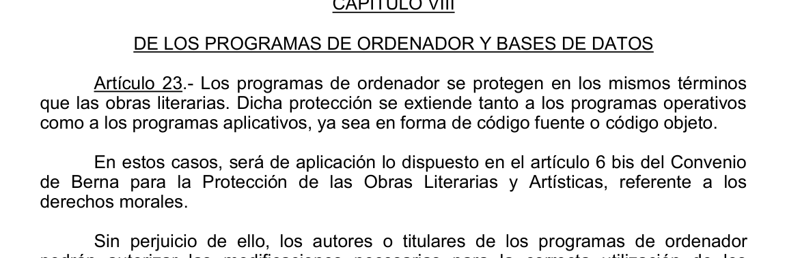
Art. 23. Los programas de ordenador se protegen en los mismos términos que las obras literarias, en código fuente y en código objeto.
Texto oficial, comunidadandina.org (PDF).
03
Autores, titulares y contratos
En Colombia una persona jurídica puede ser titular de derechos patrimoniales, pero la Decisión 351 define al autor como la persona física que realiza la creación intelectual. Para un equipo de desarrollo la pregunta correcta no es «¿el estudio es el autor?», sino: ¿quiénes son los creadores humanos y por qué vía el estudio adquirió o ejerce los derechos patrimoniales?
Nota del docente · 32–47 min · Análisis de caso colombiano. Entregar la ficha reducida de SC3179-2021 y de SC424-2024; los grupos identifican creador, titular, objeto y derecho discutido. Transición: «Saber quién creó algo no basta: para lanzar un juego necesitamos una cadena contractual».
03 · Autores, titulares y contratos
Un estudio de cincuenta personas: ¿cincuenta autores?
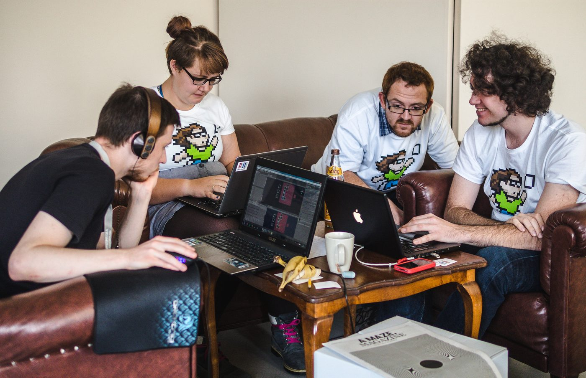
Programadores, guionistas, músicos, artistas y directores son autores de sus aportes. El estudio solo es titular si existe cesión, licencia o presunción legal documentada.
Foto: «Game Jammers 3» (Free Knowledge Game Jam, Berlín), Jason Krüger, CC BY-SA 4.0, vía Wikimedia Commons.
Ley 23 de 1982, art. 20 (texto modificado por el art. 28 de la Ley 1450 de 2011)
En las obras creadas para una persona natural o jurídica en cumplimiento de un contrato de prestación de servicios o de un contrato de trabajo, el autor es el titular originario de los derechos patrimoniales y morales; pero se presume, salvo pacto en contrario, que los derechos patrimoniales sobre la obra han sido transferidos al encargante o al empleador, según sea el caso, en la medida necesaria para el ejercicio de sus actividades habituales en la época de creación de la obra. Para que opere esta presunción se requiere que el contrato conste por escrito. […]
Fuente: Compilación jurídica del MinTIC, Ley 23 de 1982.
«En la medida necesaria» es una frase peligrosa para un estudio. Confiar solo en la presunción legal es menos seguro que tener contratos que regulen expresamente plataformas, secuelas, DLC, adaptaciones, merchandising, streaming promocional, sublicencias y usos futuros.
03 · Autores, titulares y contratos
Derechos morales y derechos patrimoniales
Morales: inalienables e irrenunciables
La Decisión 351 reconoce al autor los derechos de divulgación, paternidad e integridad con carácter inalienable, inembargable, imprescriptible e irrenunciable. El art. 30 de la Ley 23 amplía el catálogo (paternidad, integridad, ineditud, modificación y retracto) y su parágrafo 1.º dispone que «no pueden ser renunciados ni cedidos».
Por eso una cláusula colombiana no debería decir «el artista renuncia a todos sus derechos morales». Lo correcto es reconocerlos y obtener, dentro de lo admisible, autorizaciones precisas para modificaciones, recortes, adaptación a formatos, localización e integración técnica.
Patrimoniales: transferibles y licenciables
Comprenden, entre otros, la reproducción, la comunicación pública, la distribución y la adaptación o transformación. El art. 12 de la Ley 23 (modificado por el art. 3 de la Ley 1915) añade la puesta a disposición, la importación de copias no autorizadas y el alquiler comercial.
Aquí vive el derecho cotidiano de los videojuegos: descargar una copia, almacenar archivos, distribuir el juego, crear un port, adaptar un personaje, introducir un modelo 3D ajeno, crear un mod o retransmitir imágenes y sonidos puede involucrar uno o varios derechos exclusivos, según el acto concreto.
03 · Autores, titulares y contratos
La obra audiovisual: presunción a favor del productor
Ley 23 de 1982, art. 98Los derechos patrimoniales sobre la obra cinematográfica se reconocerán, salvo estipulación en contrario, a favor del productor. […]
Ley 23 de 1982, art. 103 (extracto)El productor de la obra cinematográfica tendrá los siguientes derechos exclusivos: A. Fijar y reproducir la obra […] B. Vender o alquilar los ejemplares […] C. Autorizar las traducciones y otras adaptaciones o transformaciones cinematográficas de la obra […].
La Corte Suprema, en SC424-2024, explicó que el Convenio de Berna (art. 14 bis 2, lit. b) y el art. 98 de la Ley 23 establecen una cesión presunta, salvo pacto en contrario, a favor del productor de obras audiovisuales y cinematográficas, sin eliminar los derechos morales individuales (art. 99: el director es titular de los derechos morales, sin perjuicio de los demás autores e intérpretes).
Para discutir. ¿Qué ocurre con un videojuego que alterna código interactivo con cinemáticas pregrabadas? La respuesta rigurosa es analizar componente por componente, sin importar en bloque el régimen cinematográfico al software.
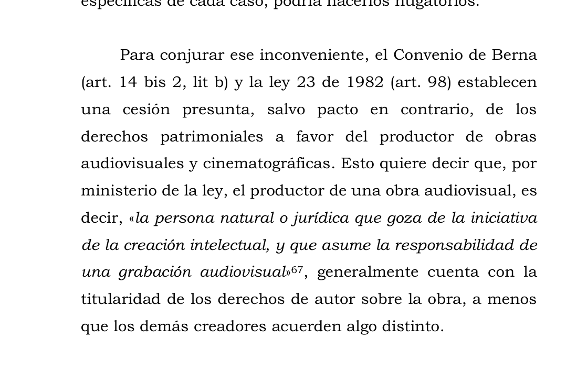
CSJ, Sala de Casación Civil, SC424-2024 (9 de abril de 2024), M.P. Aroldo Wilson Quiroz Monsalvo. Pasaje sobre la cesión presunta a favor del productor de obras audiovisuales y cinematográficas.
Fuente: PDF oficial publicado por la Corte Suprema de Justicia; también en la compilación jurídica de la CRC. Decisión judicial de libre reproducción (Ley 23 de 1982, art. 41).
03 · Autores, titulares y contratos
Dos sentencias colombianas que nos sirven de ancla
Ninguna de las dos es un litigio de videojuegos. Las usamos como analogías cuidadosamente delimitadas: no existe todavía una «jurisprudencia colombiana de videojuegos» autónoma, y conviene decirlo con claridad.
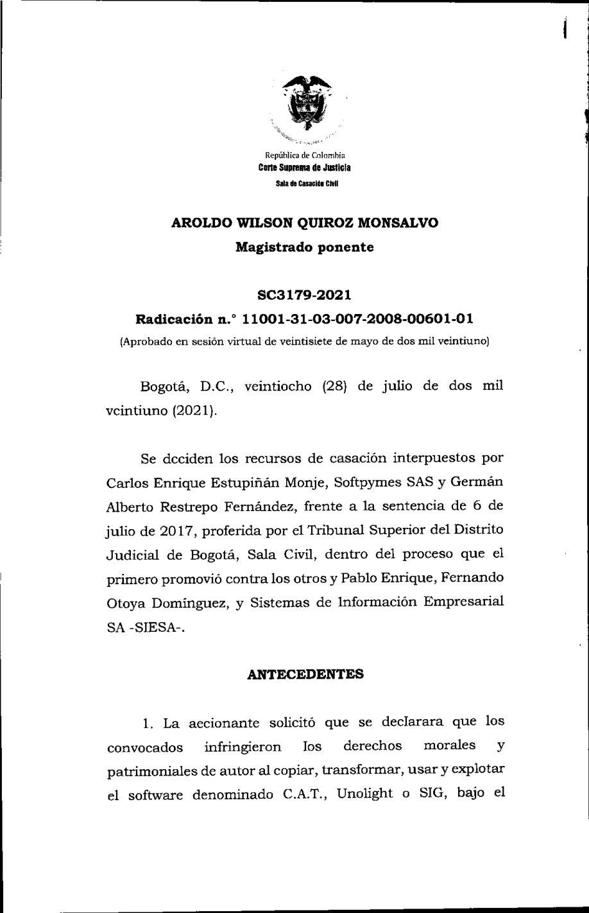
Corte Suprema de Justicia · Sala de Casación Civil · SC3179-2021 · rad. 2008-00601-01
SC3179-2021: software, idea y expresión
Litigio por supuesta reproducción o transformación de un software contable. La Corte examinó la protección del código y de elementos no literales (arquitectura, estructura, secuencia y organización), separó lo creativo de lo funcional y de lo impuesto por necesidades técnicas, y dejó en firme la decisión recurrida. Es el mejor puente colombiano entre el derecho de autor sobre software y la arquitectura de un videojuego.
Captura del PDF oficial: cortesuprema.gov.co. Decisión judicial de libre reproducción (Ley 23, art. 41).
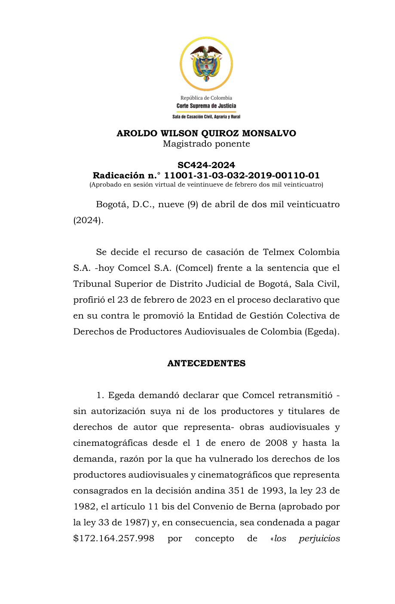
Corte Suprema de Justicia · Sala de Casación Civil · SC424-2024 · rad. 2019-00110-01 · EGEDA vs. Comcel
SC424-2024: obra audiovisual, productor y regla de tres pasos
Reclamación por retransmisión de obras audiovisuales por un operador de televisión cerrada. La Corte explicó la complejidad de estas obras, la presunción de derechos patrimoniales a favor del productor, la conservación de los derechos morales de los creadores y la regla de los tres pasos como parámetro para crear, interpretar y aplicar los límites o excepciones al derecho de autor.
Captura del PDF oficial de la Corte Suprema de Justicia. Decisión judicial de libre reproducción (Ley 23, art. 41).
03 · Autores, titulares y contratos
Ejercicio en grupos: ficha de caso
Con la ficha de cada sentencia, identifiquen creador, titular, objeto y derecho discutido. Luego pregúntense qué parte de un videojuego ocuparía el lugar de ese objeto.
SC3179-2021
SC424-2024
Claves para la puesta en común
SC3179-2021. El análisis no termina en el código literal: la Corte discutió estructura, secuencia y organización, pero exigió separar lo creativo de lo funcional y de lo impuesto por necesidades técnicas. En un videojuego, un sistema de inventario, de física o de matchmaking tiene partes que son función (no protegibles) y partes que son expresión concreta (protegibles).
SC424-2024. La Corte distinguió el derecho de autor de comunicación pública sobre las obras audiovisuales del derecho conexo sobre la señal; recordó que la explotación por un tercero requiere autorización previa y expresa, y que quien alega una excepción debe pasar la regla de los tres pasos. En un videojuego, las cinemáticas y los tráilers siguen la lógica audiovisual (productor), pero el código y el arte interactivo tienen su propio régimen.
Las respuestas se guardan en este dispositivo.
Taller 1
Negociación de licencias: Nebula Run
Nebula Run es un juego indie colombiano. El estudio necesita una canción para los créditos, arte conceptual para los personajes y autorización suficiente para un lanzamiento mundial en PC y consolas, tráilers, DLC y retransmisiones de jugadores. El compositor controla la composición, pero un sello controla la grabación; el artista es freelancer y quiere conservar su portafolio; el publisher exige una sublicencia mundial.
Cada mesa tiene cuatro roles. El resultado es un term sheet de una página que fije objeto, derechos, exclusividad, territorio, término, plataformas, modificación, sublicencia, remuneración y tratamiento del streaming.
Nota del docente · 47–67 min · Role-play. Cuatro roles por mesa. A mitad de la negociación, entregar los eventos sorpresa (última diapositiva del taller). Al cerrar, revelar la «trampa»: el compositor no era dueño del master y el artista usó una textura de tercero.
Taller 1 · Negociación de licencias
Fichas de rol
Cada participante abre solo su ficha. Contiene sus objetivos, sus líneas rojas y un dato que los demás no conocen.
Estudio indieNebula Run Studio S.A.S.
Objetivo: lanzar en PC y consolas en todo el mundo, con tráilers, DLC y streams de jugadores, dentro de un presupuesto limitado.
Líneas rojas: no puede aceptar derechos que expiren antes de la vida comercial del juego (mínimo diez años) ni licencias que no se puedan sublicenciar al publisher y a las tiendas.
Dato oculto: el publisher ya anunció la fecha de lanzamiento; sin la canción y el arte firmados en dos semanas, pierde la ventana de marketing.
Tocar para abrir
CompositorAutor de «Órbita final»
Objetivo: una remuneración fija más regalías por sincronización, y reconocimiento en créditos y tienda.
Líneas rojas: no acepta cesión total ni «renuncia» a derechos morales; quiere seguir tocando la canción en vivo y publicarla en plataformas de música.
Dato oculto: firmó hace dos años con un sello: el sello es dueño de la grabación (master) y de las voces. Él solo controla la composición.
Tocar para abrir
Artista freelanceConcept art de Kai y Mara
Objetivo: cobrar por entrega y conservar los bocetos en su portafolio y redes.
Líneas rojas: no quiere que modifiquen sus diseños sin avisar, ni que se usen para merchandising sin pago adicional.
Dato oculto: la textura de la armadura de Kai proviene de un paquete de terceros comprado con licencia «solo uso personal, no comercial».
Tocar para abrir
PublisherDistribuidor internacional
Objetivo: sublicencia mundial, exclusiva, por toda la vida comercial del juego, que cubra tráilers, tiendas, nube, DLC y contenido de creadores.
Líneas rojas: no firma si el estudio no garantiza la cadena de títulos ni indemniza por reclamaciones de terceros.
Dato oculto: su programa de creadores permite monetizar streams, pero su departamento legal exige que la música de los créditos cubra la comunicación pública por jugadores.
Tocar para abrir
Taller 1 · Negociación de licencias
Matriz de derechos
Marquen qué derecho se obtiene sobre cada activo. Una casilla vacía significa un uso no autorizado.
Activo
Reproducir
Comunicar públicamente
Distribuir
Transformar / adaptar
Sublicenciar
Streams de jugadores
Composición «Órbita final»
Grabación / master (sello)
Interpretación vocal
Arte conceptual (Kai y Mara)
Taller 1 · Negociación de licencias
Term sheet
El term sheet se guarda en este dispositivo.
Taller 1 · Negociación de licencias
Criterios de evaluación y cierre
Criterios de evaluación (10 puntos)
Identificación correcta de titulares y derechos (composición ≠ master ≠ interpretación; artista ≠ estudio)
3
Precisión del alcance de la licencia (objeto, derechos, territorio, término, plataformas, modalidades expresas)
3
Tratamiento de riesgos y cadena de títulos (garantías, indemnidad, materiales de terceros)
2
Calidad de la negociación y justificación jurídica
2
Lo que suele salir mal
Composición, grabación e interpretación son tres objetos distintos. Haber negociado con el compositor no demuestra que se pueda usar la grabación concreta; haber negociado con el artista no cubre los materiales de terceros que él incorporó. La matriz de derechos, hecha antes de firmar, evita el conflicto.
Eventos sorpresa (solo docente). 1. El sello discográfico llama: el master de «Órbita final» y las voces le pertenecen. Lo que el compositor firmó solo cubre la composición. ¿Qué tienen realmente autorizado? ¿Qué falta para sincronizar la grabación en los créditos y para que suene en los streams? 2. El artista reconoce que la textura de la armadura de Kai viene de un paquete de terceros con licencia «solo uso personal». ¿Qué se puede entregar, qué hay que rehacer y quién responde ante el publisher?
04
Mods, ingeniería inversa y medidas tecnológicas
Empecemos con una pregunta: ¿una modificación no comercial necesita autorización?
Sí
0
No
0
Depende
0
Total: 0 ·
Nota del docente · pausa 67–77 y bloque 77–97 · Minilección y comparación de casos. Dejar esta diapositiva en pantalla durante la pausa; al regresar, voto inmediato. Contrastar art. 27 de la Decisión 351, art. 13 de la Ley 1915, Sega, Blizzard, Micro Star y Nintendo v. PC Box. Transición: «La pregunta deja de ser si el mod es fan art y pasa a ser qué actos jurídicos realiza».
04 · Mods, ingeniería inversa y medidas tecnológicas
Cinco actos distintos
Un mod que sustituye texturas solo en mi copia, un mapa nuevo distribuido gratis y una expansión comercial no plantean el mismo problema. Lo que hay que distinguir es el acto: modificar localmente ≠ distribuir ≠ reutilizar arte ≠ vender una expansión ≠ eludir una medida tecnológica.
Toque un escalón para ver qué actos implica, qué norma aplica y qué pregunta hay que hacerse.
04 · Mods, ingeniería inversa y medidas tecnológicas
Dos normas que se confunden con un «fair use»
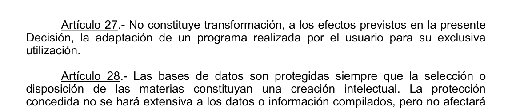
Decisión 351, art. 27. La adaptación de un programa realizada por el usuario para su utilización exclusiva no constituye transformación. Esta regla estrecha no convierte en libre la distribución de assets, historias, personajes o versiones modificadas.
Texto oficial, comunidadandina.org (PDF).
Ley 1915 de 2018, art. 13, literal a) · Excepciones a la responsabilidad por elusión de medidas tecnológicas
a) Actividades de buena fe no infractoras de ingeniería inversa realizadas a la copia de un programa de computación obtenida legalmente, siempre que los elementos particulares de dicho programa no hubiesen estado a disposición inmediata de la persona involucrada en dichas actividades, con el único propósito de lograr la interoperabilidad de un programa de computación creado independientemente con otros programas;
Fuente: Compilación jurídica del MinTIC, Ley 1915 de 2018.
El art. 13 es una excepción a la responsabilidad por elusión, sometida a condiciones específicas y acumulativas. No es un «fair use colombiano» que autorice cualquier ingeniería inversa ni la copia posterior del código ajeno.
04 · Mods, ingeniería inversa y medidas tecnológicas
Ingeniería inversa: de la caja negra a la interfaz compatible
Punto de partida
Programa ajeno en código objeto, copia obtenida legalmente
→observación, pruebas y desensamblado (copia intermedia)
Resultado intermedio
Requisitos de compatibilidad: elementos funcionales no protegidos
→desarrollo propio, sin copiar expresión
Producto
Programa independiente e interoperable
?¿había EULA? ¿se eludió una TPM?
Capa contractual y técnica
EULA / TOU + medidas tecnológicas
Estados Unidos
Sega v. Accolade (9.º Cir., 1992): la copia intermedia necesaria para acceder a elementos funcionales no protegidos fue fair use cuando no existía otro medio razonable. Davidson/Blizzard v. Jung (8.º Cir., 2005): el EULA era exigible y hubo responsabilidad bajo las reglas anti-elusión del DMCA; la defensa de interoperabilidad no prosperó.
Colombia
No hay cláusula abierta. La única vía específica para la elusión es el art. 13 de la Ley 1915, con sus condiciones acumulativas. La copia posterior de código o expresión se analiza aparte, con la Decisión 351 (arts. 7 y 23) y la doctrina de SC3179-2021 sobre función y expresión.
04 · Mods, ingeniería inversa y medidas tecnológicas
Función y expresión en el software
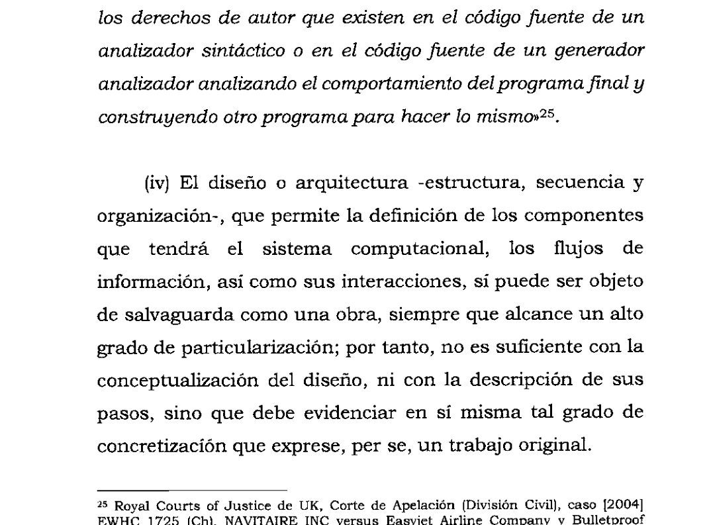
SC3179-2021: estructura, secuencia y organización. El diseño o arquitectura del software «sí puede ser objeto de salvaguarda como una obra, siempre que alcance un alto grado de particularización»; no basta la conceptualización ni la descripción de pasos.
Captura del PDF oficial: cortesuprema.gov.co.
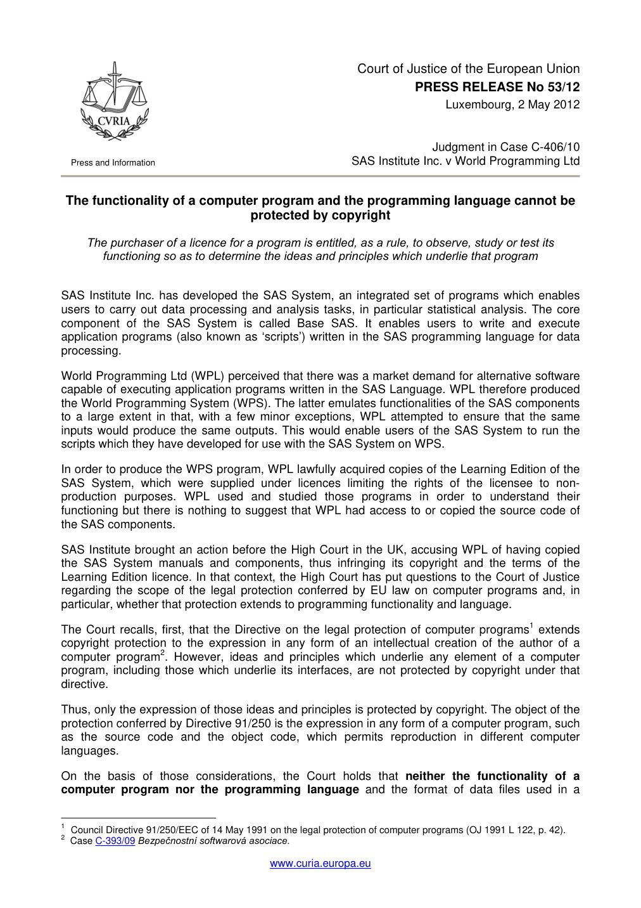
TJUE, SAS Institute v. World Programming (C-406/10), 2 de mayo de 2012. Funcionalidad, lenguaje de programación y formato de archivos no son, por sí mismos, formas de expresión protegidas; copiar código o expresión original sigue siendo otra cuestión.
Comunicado de prensa n.º 53/12: curia.europa.eu (PDF oficial).
04 · Mods, ingeniería inversa y medidas tecnológicas
Casos para discutir: clonación e interoperabilidad
Decisiones extranjeras: nos sirven para pensar, no para resolver un caso colombiano.
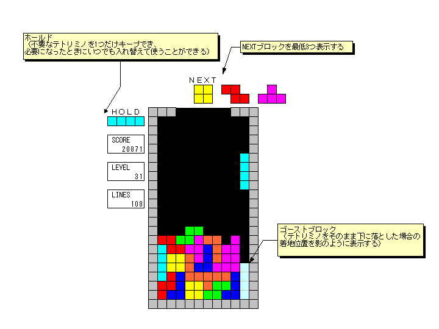
D.N.J., 2012 · 863 F. Supp. 2d 394 · Estados Unidos
Tetris Holding v. Xio Interactive
Xio creó Mino deliberadamente como juego tipo Tetris y sostuvo que solo había copiado reglas y elementos funcionales. El tribunal distinguió las reglas no protegibles de las elecciones expresivas (dimensiones, apariencia, disposición y combinaciones visuales) y concedió summary judgment a Tetris.
Para discutir
¿Dónde termina «hacer un juego de bloques que caen» y comienza copiar Tetris?
Diseñe tres cambios expresivos que permitan mantener la misma mecánica sin reproducir su expresión.
¿Cómo se formularía el problema con el art. 7 de la Decisión 351?
Accolade hizo ingeniería inversa de juegos de Sega para descubrir los requisitos de compatibilidad de la Genesis. La corte consideró fair use la copia intermedia necesaria para acceder a elementos funcionales no protegidos cuando no existía otro medio razonable, y revocó la medida preliminar contra Accolade.
Para discutir
¿Cambiaría el resultado si Accolade copiara código de Sega en el producto final?
¿Puede trasladarse este resultado a Colombia? Compare con el art. 13 de la Ley 1915.
04 · Mods, ingeniería inversa y medidas tecnológicas
Casos para discutir: contratos y medidas tecnológicas
8th Cir., 2005 · Davidson & Associates v. Jung (BnetD) · Estados Unidos
Blizzard v. Jung: el servidor alternativo
Unos desarrolladores crearon un servidor interoperable con juegos de Blizzard tras hacer ingeniería inversa. La corte confirmó la exigibilidad del EULA y de los términos de uso, y la responsabilidad bajo las reglas anti-elusión del DMCA; la defensa de interoperabilidad no prosperó en las circunstancias del caso.
Para discutir
¿Por qué Sega y BnetD parecen apuntar en direcciones distintas?
¿Puede un contrato restringir algo que una ley permitiría?
TJUE, C-355/12, 23 de enero de 2014 · Unión Europea
Nintendo v. PC Box: medidas tecnológicas, homebrew y proporcionalidad
PC Box vendía equipos que eludían las medidas de las consolas Nintendo y permitían, entre otros usos, homebrew. El Tribunal consideró los videojuegos materiales complejos y exigió proporcionalidad: la protección de las medidas tecnológicas debe dirigirse a evitar actos que realmente requieren autorización, considerando los usos no infractores y la existencia de medidas menos restrictivas.
Para discutir
¿Puede una medida antipiratería lícita bloquear también software independiente?
¿Qué evidencia serviría para decidir si el dispositivo tiene usos sustancialmente legítimos?
Foto ilustrativa de un modchip: «Xenium ICE in XBOX», Helohe, CC BY 2.5, vía Wikimedia Commons. Comunicado oficial: CURIA.
04 · Mods, ingeniería inversa y medidas tecnológicas
Las consolas del caso PC Box y el homebrew
Wii y DS incorporaban medidas tecnológicas que los dispositivos de PC Box eludían. El Tribunal pidió valorar la finalidad y los usos efectivos del equipo.
Foto: «Wii-console», Evan-Amos, dominio público, vía Wikimedia Commons.
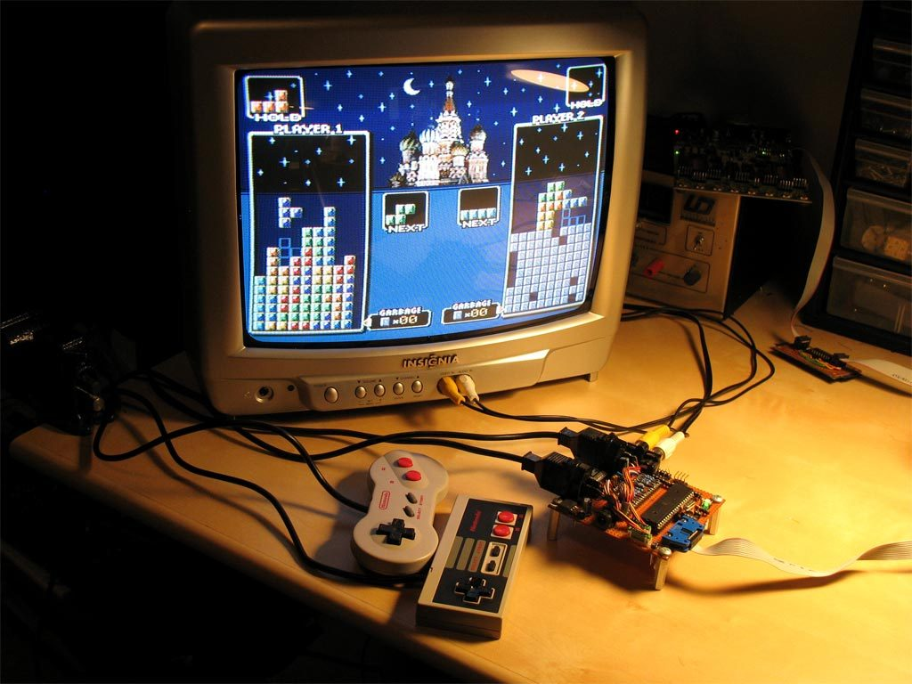
Homebrew. Una consola de código abierto que ejecuta un clon de Tetris bajo licencia GPL: el tipo de uso «legítimo» que PC Box invocaba, y cuya expresión Tetris v. Xio obliga a examinar.
Foto: «Uzebox», Uze/Belogic, CC BY-SA 3.0, vía Wikimedia Commons.
04 · Mods, ingeniería inversa y medidas tecnológicas
Micro Star v. FormGen: los mapas de usuarios como obras derivadas
9th Cir., 1998 · 154 F.3d 1107 · Estados Unidos
Juego base
Duke Nukem 3D: motor y assets (sprites, texturas, personaje)
←invoca, no copia
Creación del usuario
Archivo MAP: instrucciones de nivel creadas con el editor oficial
→recopila y vende en CD
Tercero
Micro Star: colección comercial de 300 niveles
→tribunal
Decisión
Obras derivadas que evocan nuevas aventuras del personaje: infracción probable
Aunque los archivos dependían de los assets del juego base y no los copiaban directamente, el tribunal trató los niveles como obras derivadas y consideró probable la infracción. Para discutir: ¿sería distinto si cada usuario descargara un mapa gratis? ¿Qué cambia entre almacenar instrucciones que invocan assets y copiar directamente esos assets? ¿Cómo debería ser una política moderna de mods? Decisión en Justia.
04 · Mods, ingeniería inversa y medidas tecnológicas
Sega y BnetD: el mismo término, resultados distintos
Sega v. Accolade (1992)
Davidson/Blizzard v. Jung (2005)
Qué se hizo
Desensamblar juegos de Sega para hallar el código de compatibilidad de la consola
Analizar el protocolo del cliente de Blizzard para crear un servidor alternativo (BnetD)
Marco jurídico
Copyright: copia intermedia y fair use
Contrato (EULA/TOU) y reglas anti-elusión del DMCA
Resultado
Fair use: no había otro medio razonable de acceder a elementos funcionales
Responsabilidad: el contrato era exigible y la elusión permitía evitar la autenticación de copias
Lección
La interoperabilidad puede justificar la copia intermedia
El contrato y la medida tecnológica pueden cerrar lo que el copyright dejaría abierto
Colombia
Sin fair use. La única excepción específica para la elusión es el art. 13 de la Ley 1915 (buena fe, copia legal, información no disponible de inmediato, único propósito de interoperabilidad de un programa creado independientemente). La copia posterior de expresión se juzga con la Decisión 351.
04 · Mods, ingeniería inversa y medidas tecnológicas
Caso de actualidad: Grand Theft Auto VI
GTA VI sale el 19 de noviembre de 2026. La franquicia de Rockstar y Take-Two es un catálogo vivo de casi todo lo visto en esta clase: cada episodio cabe en un capítulo.
Episodio
Qué pasó
Lo que enseña
Filtraciones (2022 y 2026)
En 2022 se filtraron decenas de videos de desarrollo. En agosto de 2026, tras avisos de retiro que no bastaron, Take-Two obtuvo en un tribunal federal de Nueva York citaciones del DMCA dirigidas a Microsoft (GitHub) y Discord para identificar al filtrador conocido como «Cyberleek».
La obra inédita también está protegida. Compárese la citación del DMCA con las órdenes de información de la Ley 1915 (capítulo 6).
Mods y herramientas
Cierre de OpenIV (2017) y política que tolera los mods de un jugador, pero no los mods en línea, el contenido de terceros ni los fines comerciales. Demanda contra los proyectos de ingeniería inversa re3 y reVC (2021), con acuerdo en 2023. Compra del equipo de FiveM, Cfx.re (2023), al que años antes había vetado.
La escala de riesgo completa: tolerancia, EULA, demanda y absorción (este capítulo).
Trampas en GTA Online
Take-Two v. Perez (S.D.N.Y., 2019): sentencia en rebeldía contra el creador del programa de trampas «Elusive», 150.000 dólares y prohibición permanente.
Copyright, contrato y medidas tecnológicas a la vez: la tríada del Taller 2.
Música con licencias a término
En abril de 2018, al cumplirse diez años de GTA IV, Rockstar retiró decenas de canciones de las emisoras del juego porque las licencias vencieron; ya había ocurrido con Vice City y San Andreas.
El term sheet debe fijar término, plataformas y remasters (Taller 1).
Personas y lugares reales
Lohan v. Take-Two (N.Y. Court of Appeals, 2018): el personaje Lacey Jonas de GTA V no era razonablemente identificable con la actriz. E.S.S. v. Rock Star Videos (9.º Cir., 2008): el club «Pig Pen» de San Andreas no infringió la marca del «Play Pen» real.
Derecho de autor, marca y derecho a la propia imagen son tres cosas distintas (capítulo 6).
Tatuajes, dos resultados
Solid Oak v. 2K Games (NBA 2K, 2020): fair use. Alexander v. Take-Two (WWE 2K, S.D. Ill.): un jurado halló infracción en 2022 por los tatuajes de Randy Orton (3.750 dólares) y en 2024 el tribunal mantuvo el veredicto, en parte porque el juego permitía aplicar los tatuajes a avatares personalizados.
El mismo problema con resultados opuestos: por eso en Colombia se exige licencia o excepción, no un cálculo de fair use (capítulo 6).
Hechos verificados el 28 de octubre de 2026 en decisiones judiciales y prensa especializada; las referencias están en el capítulo 9.
Taller 2
Mediación modder–publisher: Kingdom Reborn
Un modder crea gratuitamente Kingdom Reborn: introduce una historia propia, pero usa personajes y texturas del juego, requiere una herramienta que interactúa con archivos protegidos y desactiva una comprobación técnica. El publisher envía una amenaza de retirada. En cada mesa hay un modder, un publisher y dos mediadores.
Trabajen las tres columnas por separado. «Es no comercial» no puede usarse como argumento concluyente; si aparece, la página se lo recordará. El resultado es un acuerdo de mediación de máximo ocho términos.
Nota del docente · 97–112 min · Mediación. El publisher exige retirada; el modder argumenta interoperabilidad, uso no comercial y originalidad. Los mediadores deben separar código, TPM, arte, marca y contrato. Cierre: comparar acuerdos; ¿quién resolvió el conflicto sin conceder más derechos de los necesarios?
Taller 2 · Mediación modder–publisher
Tres columnas obligatorias
Taller 2 · Mediación modder–publisher
Acuerdo de mediación
El acuerdo se guarda en este dispositivo.
Taller 2 · Mediación modder–publisher
Criterios de evaluación (10 puntos)
Separación de los problemas jurídicos (copyright, contrato, medidas tecnológicas, marca)
3
Solución compatible con los derechos de ambas partes, sin conceder más de lo necesario
3
Análisis de interoperabilidad y medidas tecnológicas (art. 13 de la Ley 1915; Nintendo v. PC Box)
2
Claridad y ejecutabilidad del acuerdo
2
Puesta en común: ¿quién resolvió el conflicto sin conceder más derechos de los necesarios?
05
Streaming y Let’s Play
La comunicación pública es un derecho exclusivo de amplio alcance en la Decisión 351 y en el art. 12 de la Ley 23, que incluye la puesta a disposición. Por eso es incorrecto decir que transmitir un videojuego es libre «porque es publicidad para el publisher», pero también es simplista decir que todo stream es ilícito. Hay que revisar licencias, términos del publisher, componentes de terceros y excepciones aplicables.
Nota del docente · 112–126 min · Microclase y discusión. Desmontar «streaming = fair use». Mostrar las directrices de Nintendo y compararlas con la comunicación pública y las excepciones colombianas. Transición: «Una plataforma recibe ahora una reclamación. ¿Qué debe hacer?».
05 · Streaming y Let’s Play
Una política del titular no es una excepción legal
El botón de captura no es una excepción legal. Las directrices autorizan compartir capturas hechas con funciones del sistema: es un permiso del titular, no un derecho del usuario.
Foto: «Nintendo-Switch-Console-Docked-wJoyConRB», Evan-Amos, dominio público, vía Wikimedia Commons.
Una política voluntaria del titular funciona como autorización contractual o permiso. No es una excepción legal: el titular puede cambiarla, condicionarla o retirarla.
05 · Streaming y Let’s Play
La música del stream: tres derechos, no uno
Haber obtenido permiso del publisher para transmitir gameplay no demuestra que el publisher pueda sublicenciar todos los derechos de una canción incorporada. Marque el estado de cada derecho.
Composición
Autor o editorial musical. ¿Está autorizada la sincronización y la comunicación pública?
sin revisar
Fonograma (master)
Productor fonográfico o sello. ¿Se licenció la grabación concreta que suena?
sin revisar
Interpretación
Artistas intérpretes o ejecutantes (derechos conexos). ¿Qué usos, territorios y duración autorizaron?
sin revisar
Marque los tres derechos para obtener una lectura.
Estados Unidos: fair use
Cláusula abierta: cuatro factores (propósito y carácter del uso, naturaleza de la obra, cantidad y sustancialidad, efecto sobre el mercado), valorados caso por caso.
Colombia: excepciones específicas
La Decisión 351 prevé limitaciones enumeradas (cita, determinados usos de enseñanza, ciertas reproducciones de bibliotecas, entre otras) sometidas a la regla de tres pasos. No existe una cláusula abierta de usos transformativos.
La regla de los tres pasos (Berna, art. 9.2 · Decisión 351, art. 21 · SC424-2024)
Caso especial. La excepción debe ser específica y taxativa; no se presume.
Sin conflicto con la explotación normal de la obra.
Sin perjuicio injustificado a los intereses legítimos del titular.
05 · Streaming y Let’s Play
SC424-2024 y la regla de los tres pasos
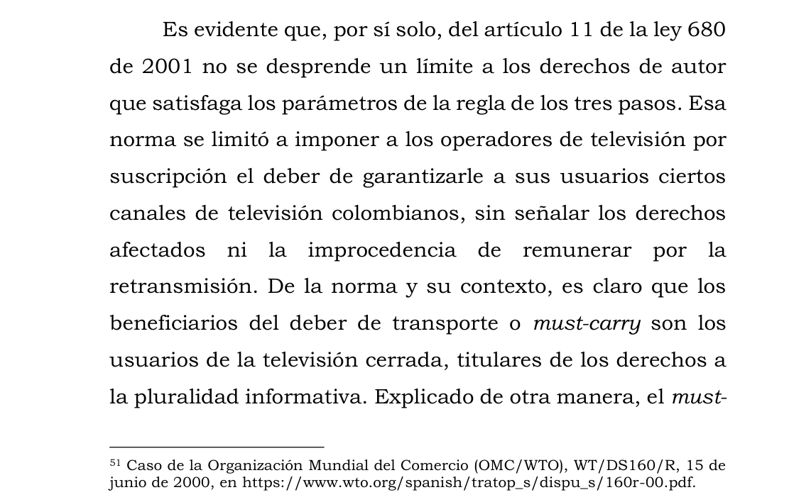
La Corte Suprema la usa como parámetro para crear, interpretar y aplicar los límites o excepciones al derecho de autor: quien alega una excepción debe demostrarla. En el caso, el deber de must-carry de los operadores de televisión cerrada no era una limitación al derecho de comunicación pública de las obras audiovisuales.
Captura del PDF oficial de la Corte Suprema de Justicia. Decisión judicial de libre reproducción (Ley 23, art. 41).
Taller 3
Takedown comparado
Un streamer publica ocho horas de un RPG. El publisher permite el gameplay bajo su política, pero durante 90 segundos suena una grabación musical de un tercero. El titular presenta un aviso al estilo del DMCA. Tres equipos preparan, respectivamente, la reclamación, la respuesta del streamer y la decisión de la plataforma. Después, todos traducen el problema a categorías colombianas, sin fingir que Colombia tiene el mismo DMCA.
Nota del docente · 126–141 min · Simulación. Tres equipos: titular musical, streamer y plataforma. Después, todos traducen el problema a categorías colombianas. Transición: «El conflicto pudo evitarse antes del lanzamiento si la licencia hubiera sido mejor».
Taller 3 · Takedown comparado
Centro de reclamaciones de la plataforma
Identifique el activo (composición, fonograma, interpretación), el derecho afectado, el minuto exacto y lo que solicita. Unas 150 palabras.
¿Qué autoriza la política del publisher y qué no? ¿Hay licencia sobre la música? ¿Existe alguna excepción aplicable? Unas 150 palabras.
Decisión motivada: retirar, silenciar el fragmento, mantener, pedir más información. Unas 100 palabras.
Taller 3 · Takedown comparado
¿Qué es derecho estadounidense o de plataforma, y qué se analizaría en Colombia?
Aspecto
Estados Unidos / plataforma
Colombia
Derecho afectado
Procedimiento de aviso y retiro
Defensas del streamer
Remedios del titular
Un error frecuente: enseñar un copyright strike de YouTube como si fuese una institución jurídica colombiana. El aviso es un procedimiento privado de la plataforma inspirado en la ley estadounidense; el problema sustantivo en Colombia es la comunicación pública no autorizada y la existencia o no de una excepción.
La entrega se guarda en este dispositivo.
Taller 3 · Takedown comparado
Criterios de evaluación (10 puntos)
Identificación del activo y del derecho (composición, fonograma, interpretación; comunicación pública)
3
Coherencia del aviso y de la respuesta
3
Decisión de plataforma razonada
2
Traducción correcta al marco colombiano
2
El conflicto pudo evitarse antes del lanzamiento si la licencia hubiera sido mejor.
06
Licencias, obras dentro de obras e inteligencia artificial
Las licencias se interpretan según lo que dicen. El art. 31 de la Decisión 351 dispone que toda transferencia de derechos patrimoniales, así como las autorizaciones o licencias de uso, se entienden limitadas a las formas de explotación y demás modalidades pactadas expresamente en el contrato. Por eso una cláusula genérica «para cualquier uso» es más débil, no más fuerte, que una enumeración precisa.
Nota del docente · 141–153 min · Minilección de cierre doctrinal. Presentar las cláusulas problemáticas y el caso Thaler. Transición: «Ahora ustedes son abogados de producción: arreglen el contrato».
06 · Licencias, obras dentro de obras e IA
Una cláusula defectuosa, muy frecuente
Cláusula«El creador cede al estudio todos los derechos presentes y futuros, morales y patrimoniales, para siempre y para cualquier uso.»
Por qué falla
Pretende una cesión de derechos morales, que en Colombia no pueden ser renunciados ni cedidos (Ley 23, art. 30, par. 1.º).
«Para cualquier uso» choca con la regla de las modalidades expresas: lo no pactado no se entiende concedido.
No dice nada de territorio, plataformas, sublicencia, contenido de usuarios, streaming ni IA: los usos que generan conflictos después del lanzamiento.
No distingue obra, interpretación y fonograma cuando el activo es musical.
Cinco preguntas antes de publicar
¿Qué?
¿Quién?
¿Qué derecho?
¿Qué licencia?
¿Qué excepción?
Regla profesional: «no tengo una licencia» y «tengo una excepción» son afirmaciones distintas.
06 · Licencias, obras dentro de obras e IA
Una obra dentro de otra: el tatuaje dentro del avatar
S.D.N.Y., 26 de marzo de 2020 · No. 16-CV-724 · Estados Unidos
Solid Oak Sketches v. 2K Games
La titular de derechos sobre tatuajes de jugadores de la NBA demandó por su representación en NBA 2K. El tribunal concedió summary judgment a los demandados y concluyó, entre otras bases, que el uso era fair use: valoró su función de representar realistamente a los jugadores, su mínima relevancia dentro del juego y la ausencia de sustitución de mercado.
Para discutir
¿Comprar el derecho a usar la imagen de un deportista incluye automáticamente las obras que lleva tatuadas?
¿Qué cambiaría en Colombia, sin la cláusula abierta de fair use?
Foto: «LeBron James 2011-03-30 brightened», Keith Allison, CC BY-SA 2.0, vía Wikimedia Commons. La fotografía está licenciada; los tatuajes son obras de sus autores.
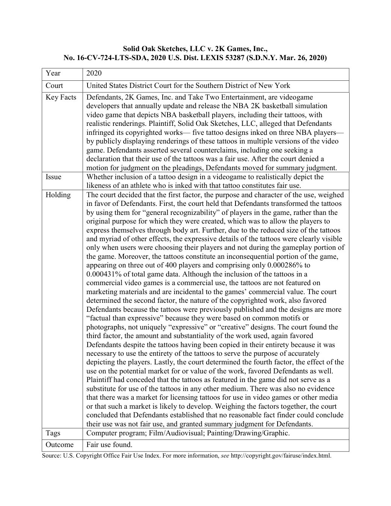
Ficha oficial del Fair Use Index (U.S. Copyright Office). Hechos, cuestión, análisis de los cuatro factores y resultado del caso.
Fuente: copyright.gov (PDF). Obra del Gobierno de los Estados Unidos, dominio público.
06 · Licencias, obras dentro de obras e IA
Inteligencia artificial: ¿quién creó este asset?
En Colombia el dato normativo sólido es que la Decisión 351 define al autor como persona física. De allí se plantea, como inferencia jurídica y no como precedente resuelto, un problema serio de autoría cuando el resultado sea enteramente producido por un sistema sin contribución creativa humana identificable.
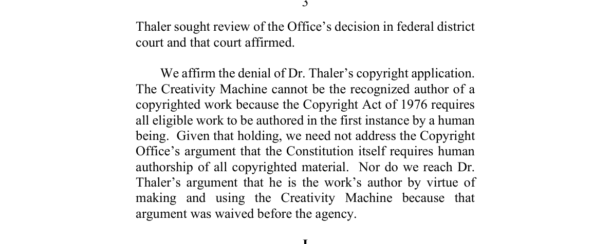
Thaler v. Perlmutter, D.C. Cir., 18 de marzo de 2025. La «Creativity Machine» no puede ser autora reconocida porque el Copyright Act exige que toda obra elegible sea creada en primera instancia por un ser humano. La Corte Suprema de EE. UU. denegó el certiorari el 2 de marzo de 2026.
Opinión oficial: media.cadc.uscourts.gov (PDF). Dominio público.
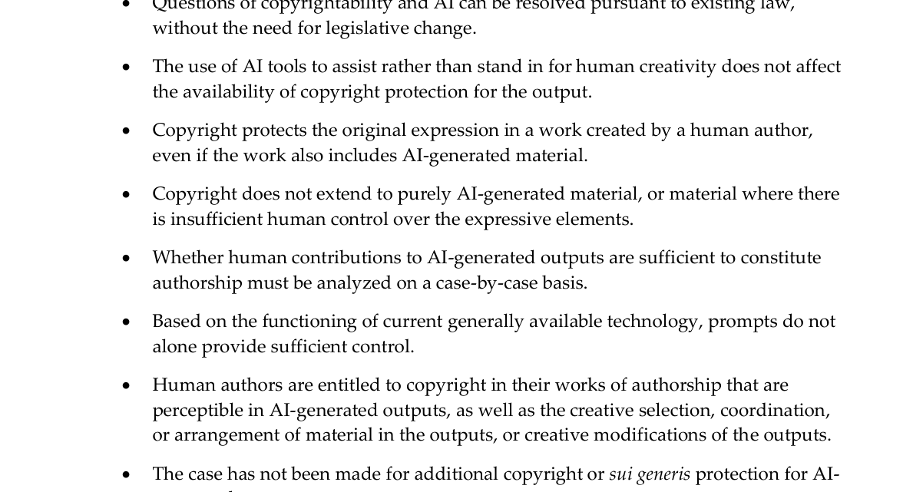
U.S. Copyright Office, Copyright and Artificial Intelligence, Part 2 (2025). El copyright no se extiende al material puramente generado por IA ni al que carece de control humano suficiente; sí pueden protegerse contribuciones humanas originales, incluida en ciertos casos la selección, coordinación, arreglo o modificación creativa.
Fuente: copyright.gov (PDF). Dominio público.
Cuatro preguntas distintas
Autoría y protegibilidad del resultado. ¿Hay aporte humano identificable: selección, retoque, composición?
Infracción potencial del resultado. ¿Reproduce o deriva de obras preexistentes reconocibles?
Licitud del entrenamiento. Pregunta distinta, con respuestas diferentes según la jurisdicción.
Contrato con el proveedor. Derechos sobre los resultados, indemnidad, uso de los inputs, entrenamiento posterior.
«Puedo usarlo», «soy dueño» y «el resultado tiene copyright» son tres afirmaciones diferentes.
06 · Licencias, obras dentro de obras e IA
Observancia en Colombia
La Ley 1915 de 2018 permite que los conflictos se resuelvan ante la jurisdicción ordinaria o ante autoridades administrativas con funciones jurisdiccionales. Contempla órdenes de información, destrucción o retiro de mercancías e implementos infractores y la opción del titular por un sistema de indemnizaciones preestablecidas (art. 32, condicionalmente exequible). También reformó el régimen penal de elusión para conductas realizadas con finalidad de ventaja comercial o ganancia económica privada (art. 33).
Taller 4
Redacción de cláusulas
Cada equipo reemplaza la cláusula defectuosa del capítulo anterior por dos cláusulas: una de grant of rights y otra sobre modificaciones, streaming, contenido de usuarios e inteligencia artificial. Deben evitar una pretendida renuncia total a derechos morales, incompatible con su carácter irrenunciable en Colombia. Después intercambian con otro equipo para revisarse mutuamente.
Cláusula que se reemplaza«El creador cede al estudio todos los derechos presentes y futuros, morales y patrimoniales, para siempre y para cualquier uso.»
Nota del docente · 153–168 min · Redacción contractual. Los equipos redactan dos cláusulas e intercambian con otro equipo para el redline. Al cierre, proyectar las cláusulas modelo (capítulo 8) y señalar dónde sobrecedieron o dejaron vacíos.
Taller 4 · Redacción de cláusulas
Las dos cláusulas
Extensión total de las dos cláusulas: entre 180 y 250 palabras
La redacción se guarda en este dispositivo.
Taller 4 · Redacción de cláusulas
Revisión del otro equipo
Intercambien dispositivos o lean en voz alta. Marquen lo que falta o lo que sobra.
Las cláusulas modelo de referencia están en el capítulo 8.
Taller 4 · Redacción de cláusulas
Criterios de evaluación (10 puntos)
Precisión de derechos y modalidades
3
Tratamiento jurídicamente correcto de los derechos morales
2
Cobertura de contenido de usuarios, streaming e inteligencia artificial
3
Claridad y ausencia de contradicciones
2
07
Síntesis y evaluación
Volvamos a la pregunta del comienzo. Ahora deberían poder contar las obras del tráiler y, sobre todo, decir quién tiene cada derecho y qué haría falta para usarlas. Seis preguntas para comprobarlo y una última, individual, para cerrar.
Nota del docente · 168–180 min · Quiz individual y exit ticket. Seis preguntas rápidas; en el último minuto, el exit ticket. Cerrar retomando la encuesta inicial: un videojuego es una cadena coordinada de derechos, no una sola licencia.
07 · Síntesis y evaluación
Quiz de salida
Aciertos: 0 / 5
07 · Síntesis y evaluación
Exit ticket y cómo se evalúa la sesión
Copiar y pegar en el formulario del curso.
Cómo se evalúa la sesión
Participación razonada en los casos
15 %
Taller 1 · Negociación de licencias
20 %
Taller 2 · Mediación modder–publisher
15 %
Taller 3 · Takedown comparado
15 %
Taller 4 · Redacción de cláusulas
20 %
Quiz individual
15 %
Los productos escritos pesan más que la intervención oral: permiten evaluar identificación de problemas, precisión y transferencia práctica.
07 · Síntesis y evaluación
En videojuegos, el problema rara vez es un solo «copyright». El problema profesional es coordinar muchas obras, muchos autores, muchos titulares, muchas licencias y muchos usos, antes de que el código llegue a producción.
Primero descomponer, luego atribuir, después autorizar y, al final, evaluar excepciones y riesgos.
08
Materiales de consulta
Lo que conviene tener a mano después de la clase: las reglas de bolsillo, la lista de verificación de activos, los modelos de cláusulas, las lecturas con enlace a su fuente primaria y el trabajo posterior.
08 · Materiales de consulta
Reglas de bolsillo
Pregunta
Regla
¿Qué protege el derecho de autor?
Expresión original; no la idea o la función abstracta (Decisión 351, arts. 4 y 7).
¿Quién es autor?
La persona física que realiza la creación intelectual (Decisión 351, art. 3).
¿Puede una empresa ser titular?
Sí: puede ostentar derechos patrimoniales conforme a las reglas de transmisión y titularidad (Ley 23, art. 20; art. 98 para el productor audiovisual).
Código
Software protegido como obra literaria, en código fuente y objeto (Decisión 351, art. 23).
Arte, animación, videos
Pueden tener protección independiente; la DNDA trata las capas del videojuego por separado.
Derechos morales
Paternidad, integridad y demás facultades legales; no son libremente renunciables (Ley 23, art. 30).
Patrimoniales
Reproducción, comunicación pública, distribución, transformación, entre otros (Decisión 351; Ley 23, art. 12).
Mods
Preguntar: ¿solo modifica localmente? ¿distribuye código o assets? ¿crea obra derivada? ¿elude una medida tecnológica? ¿qué dice la licencia?
Streaming
Revisar comunicación pública, licencia del publisher y derechos de música y de terceros.
Fair use
No trasplantarlo a Colombia; buscar una excepción legal concreta y aplicar la regla de tres pasos (SC424-2024).
Ingeniería inversa
La excepción de la Ley 1915, art. 13, es específica: buena fe, copia legal, información no inmediatamente disponible e interoperabilidad de un programa independiente.
IA
Identificar aporte humano, procedencia de inputs y resultados, términos del proveedor y similitudes con obras preexistentes.
Regla profesional
«No tengo una licencia» y «tengo una excepción» son afirmaciones distintas.
08 · Materiales de consulta
Lista de verificación de activos
Antes de congelar cada activo
0 / 21
La lista se guarda en este dispositivo.
08 · Materiales de consulta
Modelos de cláusulas (para el ejercicio académico)
Modelo A · Grant de derechos sobre un activo artísticoLicencia/Cesión patrimonial. El Creador autoriza a [Estudio], con carácter [exclusivo/no exclusivo], durante [término] y para [territorio], a reproducir, integrar, distribuir, comunicar públicamente y adaptar el Activo exclusivamente como parte del videojuego [X], sus versiones, actualizaciones, DLC, ports y materiales promocionales especificados en este contrato, incluyendo la sublicencia necesaria a publishers, distribuidores y plataformas para dichas finalidades. Cualquier modalidad de explotación no expresamente prevista requerirá acuerdo adicional.
Modelo B · Modificaciones y derechos moralesIntegración y modificaciones. El Creador reconoce que la integración técnica podrá requerir cambios de formato, resolución, tamaño, color, animación, localización y compatibilidad. Autoriza tales modificaciones en la medida permitida por la ley y necesaria para los usos contractualmente autorizados. Las partes reconocen que esta disposición no pretende transferir ni renunciar a derechos morales que tengan carácter inalienable o irrenunciable conforme al derecho aplicable.
Modelo C · Streaming y contenido de usuariosContenido de usuarios. El Estudio podrá habilitar herramientas para crear y compartir contenido dentro del Juego. El Usuario conservará, en su caso, los derechos que ostente sobre sus aportes originales y otorgará al Estudio una licencia [alcance definido] necesaria para alojarlos, reproducirlos, mostrarlos y ponerlos a disposición dentro del servicio. Esta licencia no confiere al Usuario derecho alguno sobre personajes, música, código, marcas u otros elementos preexistentes del Juego, salvo el permiso limitado necesario para utilizar las herramientas autorizadas.
Modelo D · Inteligencia artificial generativaHerramientas generativas. El proveedor declarará las herramientas generativas utilizadas en la creación del Activo y conservará registro razonable del proceso creativo y de las modificaciones humanas realizadas. Garantizará que cuenta con facultades suficientes respecto de los materiales que incorpore deliberadamente como inputs y notificará cualquier restricción contractual conocida sobre la explotación comercial de los resultados. Ninguna disposición de esta cláusula se interpretará como garantía de que un elemento carente de autoría humana sea protegible por derecho de autor.
La especificidad importa porque el art. 31 de la Decisión 351 limita las transferencias y licencias a las formas de explotación y demás modalidades pactadas expresamente en el contrato.
Trabajo posterior: memorando de preparación para el lanzamiento
Cada estudiante o grupo recibe un videojuego ficticio a cinco semanas del lanzamiento y produce un memorando de 1.500 a 2.000 palabras, una matriz de activos y un anexo contractual. El juego incluye, obligatoriamente, un freelancer, una canción licenciada, un componente de software libre, contenido de usuarios, un mod, un activo generado con IA y un streamer patrocinado. La pregunta no es «¿es legal el juego?», sino: ¿qué impediría autorizar hoy la versión final y qué debe resolverse antes del lanzamiento?
Mapa de derechos y titulares
25 %
Aplicación correcta del derecho colombiano
25 %
Distinción entre norma colombiana y comparación extranjera
15 %
Contratos y mitigación de riesgos
20 %
Uso de fuentes primarias y calidad argumentativa
15 %
09
Fuentes e imágenes
Cada imagen tiene autor, licencia y enlace a su origen. Las capturas de normas y sentencias colombianas se amparan en el art. 41 de la Ley 23 de 1982 (libre reproducción de leyes y decisiones judiciales); las obras del Gobierno de Estados Unidos están en dominio público; los comunicados del TJUE se reproducen con indicación de fuente; las fotografías provienen de Wikimedia Commons bajo licencias libres; las capturas de la DNDA y de Nintendo se incluyen como cita con fines docentes.
Tipografías: Bebas Neue e Inter (SIL Open Font License), servidas por Google Fonts. Iconos: Lucide (ISC). La animación de portada es un dibujo propio en canvas.
09 · Fuentes e imágenes
Créditos de las imágenes
Archivo
Descripción
Autor / entidad
Licencia
Fuente
game_jammers.jpg
Equipo en la Free Knowledge Game Jam (Berlín, 2015)
Corte Suprema de Justicia, Sala de Casación Civil, SC3179-2021, rad. 11001-31-03-007-2008-00601-01. cortesuprema.gov.co
Corte Suprema de Justicia, Sala de Casación Civil, SC424-2024, 9 de abril de 2024, M.P. Aroldo Wilson Quiroz Monsalvo, rad. 11001-31-03-032-2019-00110-01. cortesuprema.gov.co; compilación CRC
Convenio de Berna para la Protección de las Obras Literarias y Artísticas. WIPO Lex
TJUE, Comunicado de prensa n.º 9/14, Nintendo v. PC Box, C-355/12 (23 de enero de 2014). curia.europa.eu
TJUE, Comunicado de prensa n.º 53/12, SAS Institute v. World Programming, C-406/10 (2 de mayo de 2012). curia.europa.eu
Nintendo, Game Content Guidelines for Online Video & Image Sharing Platforms (actualizadas el 2 de septiembre de 2024). nintendo.co.jp
Tetris Holding, LLC v. Xio Interactive, Inc., 863 F. Supp. 2d 394 (D.N.J. 2012). Texto
Sega Enterprises Ltd. v. Accolade, Inc., 977 F.2d 1510 (9th Cir. 1992). Justia
E.S.S. Entertainment 2000, Inc. v. Rock Star Videos, Inc., 547 F.3d 1095 (9th Cir. 2008). Opinión (PDF)
Take-Two Interactive Software, Inc. v. Perez, No. 1:18-cv-07658 (S.D.N.Y. 5 de febrero de 2019), sentencia en rebeldía. Reseña (Patent Arcade)
Alexander v. Take-Two Interactive Software, Inc., No. 18-CV-966 (S.D. Ill., veredicto de 30 de septiembre de 2022 y decisión de 25 de septiembre de 2024), ficha del U.S. Copyright Office Fair Use Index. copyright.gov
Prensa consultada para el caso GTA VI (28 de octubre de 2026): Video Games Chronicle y PC Gamer sobre las citaciones de 2026; TorrentFreak sobre el litigio re3/reVC; GameSpot sobre la compra de Cfx.re; GameSpot sobre la música retirada de GTA IV; Games.gg sobre la fecha de lanzamiento.
Material de clase sobre derechos de autor en videojuegos. Los casos extranjeros se presentan como derecho comparado. Lo que los equipos escriben en los talleres se guarda únicamente en el navegador del dispositivo donde se escribe. Última revisión de fuentes: 28 de octubre de 2026.